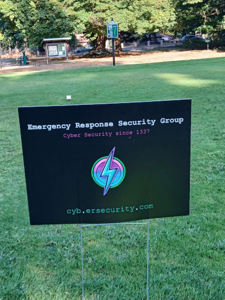
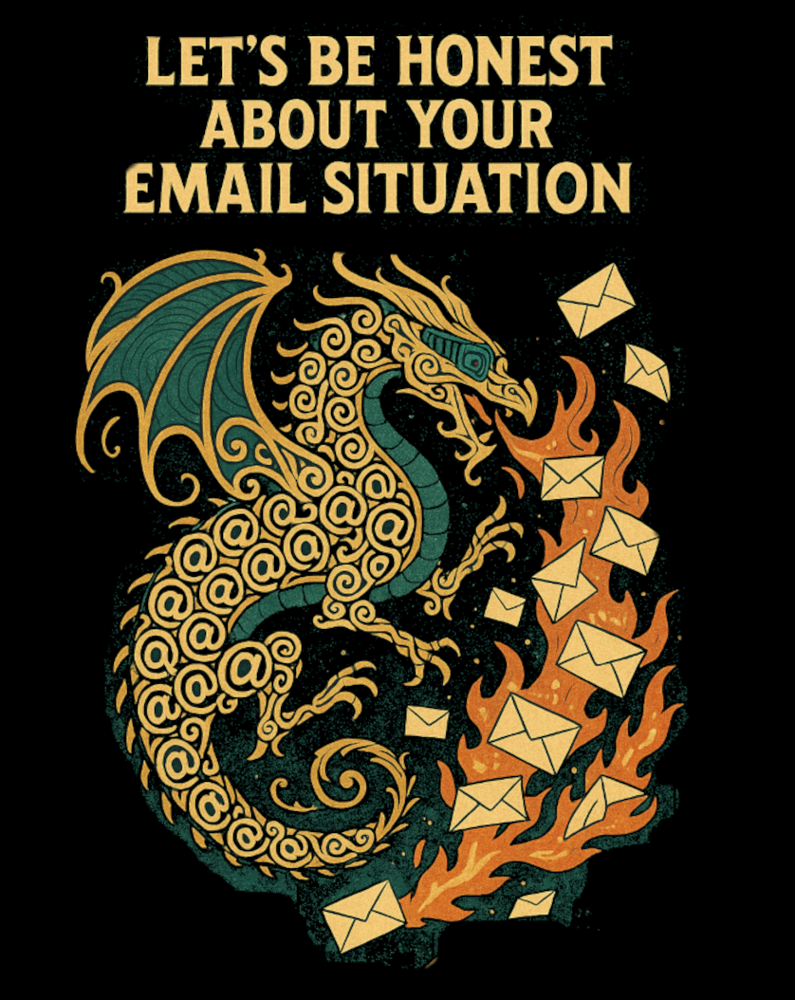

DL Rhiannon Williams
Emergency Response Security Group
Emergency Response Security Group is a boutique cybersecurity consultancy headquartered in Oregon, providing strategic security consulting, incident response, digital forensics, and investigative services throughout the United States.
Remote engagements are standard, with on-site consulting available when project requirements warrant travel.
Founded by Rhiannon Williams, the firm draws on more than 27 years of enterprise cybersecurity experience spanning telecommunications, government, defense, financial services, gaming, retail, and critical infrastructure.
Our work focuses on identifying, investigating, and remediating complex security challenges through practical engineering, investigative rigor, and executive-level advisory services.
About Rhiannon
Rhiannon Williams brings more than 27 years of experience in enterprise cybersecurity, advanced digital forensics, incident response, offensive security, security research, penetration testing, and complex investigations. Her background includes recognized cyber defense work with the Department of War.
Her investigative specialties include corporate espionage, sophisticated intrusions, data-leak investigations, anti-forensics research, security architecture, threat modeling, security assessments, and attack simulation.
An award-winning cybersecurity engineer, Rhiannon has extensive experience in red team and blue team operations, advanced threat detection, malware reverse engineering, exploit development, and security engineering in complex, custom-built enterprise environments.
Her technical capabilities span incident response, digital forensics, penetration testing, malware analysis, phishing investigations, identity and access governance, SIEM and EDR engineering, open-source intelligence, threat hunting, corporate investigations, and security architecture.
Her professional background also includes independent security research, victim-focused nonprofit cybersecurity work, expert investigative support, and guest authorship on cyber warfare.
Outside of her professional work, Rhiannon volunteers with victims of crime, enjoys restoring antique sewing machines, and is happily married (sorry, fellas).
Our Consulting Philosophy
Clients engage Emergency Response Security Group for independent judgment, technical precision, investigative expertise, and the ability to resolve exceptionally difficult security problems.
We collaborate with executive leadership, legal counsel, law enforcement, and technical teams to understand organizational risk, prioritize remediation, and develop security strategies that strengthen resilience while supporting operational objectives.
Every engagement emphasizes confidentiality, investigative integrity, practical execution, and measurable business outcomes.
Emergency Response Security Group is a licensed and insured business in the State of Oregon.
Business partners and referrals are always welcome.
We also provide volunteer support to victims of crime .
Publications & Commentary
- The Illusion of Expertise | Cyberwarfare.com
- Four Million Bad Decisions: The Data Breach Every American Should Know About | Cyberwarfare.com
Community Involvement
Proud Sponsor of the 2025 Knights of Columbus Golf Tournament

